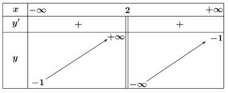
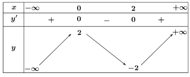
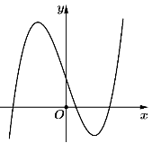
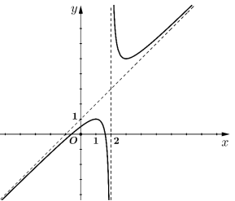
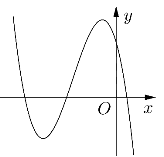
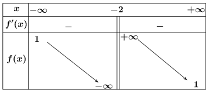
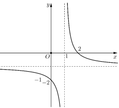
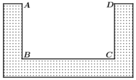
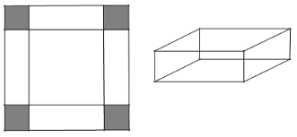

Thời gian làm bài: 90 phút

Lời giải Dựa vào bảng biến thiên ta thấy hàm số đồng biến trên $\left( -\infty ;2 \right)$ và $\left( 2;+\infty \right)$.

Lời giải Ta có: $a&=1\gt 0\,;\,\,{y}'&=3{{x}^{2}}-6x&=0\Leftrightarrow \left[ \begin{aligned} x&=0\Rightarrow y&=2\\ x&=2\Rightarrow y&=-2\\ \end{aligned} \right.$

Lời giải Từ dáng điệu đồ thị suy ra hệ số $a\gt 0$ Giao điểm của đồ thị với trục $Oy$ có tung độ dương Từ đồ thị ta thấy, hoành độ hai điểm cực trị trái dấu

Lời giải Hàm số đó là $y=\frac{{{x}^{2}}-x-1}{x-2}$.
Lời giải Giao điểm của đồ thị hàm số đã cho với trục tung là $B\left( 0\,;\,2{{m}^{2}}+4 \right)$ Phương trình hoành độ giao điểm của đồ thị đã cho với trục hoành là: ${{x}^{3}}+\left( {{m}^{2}}-2 \right)x+2{{m}^{2}}+4&=0\Leftrightarrow \left( x+2 \right)\left( {{x}^{2}}-2x+{{m}^{2}}+2 \right)&=0\Leftrightarrow \left[ \begin{aligned} x&=-2\\ {{\left( x-1 \right)}^{2}}+{{m}^{2}}+1&=0\,\,\,\,\left( vn \right)\\ \end{aligned} \right.$ Giao điểm của đồ thị đã cho với trục hoành là $A\left( -2;0 \right)$. Diện tích tam giác $ABC$ là: $S=\frac{1}{2}OA.OB=\frac{1}{2}.2.\left( 2{{m}^{2}}+4 \right)=8\Rightarrow m=\pm \sqrt{2}.$
Lời giải Hàm số $f\left( t \right)$ thể hiện nồng độ chất khử trùng (gam/lít) trong bể sau $t$ phút là $f\left( t \right)=\frac{20t}{40t+200}=\frac{t}{2t+10}$

Lời giải Ta có ${y}'=3a{{x}^{2}}+2bx+c$. Dựa vào đồ thị ta thấy: $a\lt 0$ Hàm số có 2 cực trị âm nên $\left\{ \begin{array}{*{35}{l}} {{{{\Delta }'}}_{{{y}'}}}\gt 0\\ S\lt 0\\ P\gt 0\\\end{array}\Leftrightarrow \left\{ \begin{array}{*{35}{l}} {{b}^{2}}-9ac\gt 0\\ -\frac{2b}{3a}\lt 0\quad \Rightarrow\\ \frac{c}{3a}\gt 0\\\end{array}\Rightarrow \left\{ \begin{array}{*{35}{l}} b\lt 0\\ c\lt 0\\\end{array} \right. \right. \right.$ Đồ thị cắt trục $Oy$ tại điểm $\left( 0;d \right)$ nên $d\gt 0$. Vậy có đúng một số dương trong các số $a,b,c,d$.
Lời giải Số khối nước tại thời điểm $t$ là $4t+30$ Số kg bột có được tại thời điểm $t$ là $3t$ Nồng độ bột xử lý nước có trong hồ tại thời điểm $t$ là $f\left( t \right)=\frac{3t}{4t+30}$ với $t\ge 0$. Khảo sát hàm số $f\left( t \right)=\frac{3t}{4t+30}$ có đạo hàm ${f}'\left( t \right)=\frac{90}{{{\left( 4t+30 \right)}^{2}}}$ nên hàm số $f\left( t \right)$ đồng biến trên $\left( 0\,;\,+\infty \right)$. Khi đó $\underset{t\to +\infty }{\mathop{\lim }}\,f\left( t \right)=\underset{t\to +\infty }{\mathop{\lim }}\,\frac{3t}{4t+30}=\frac{3}{4}=0,75$

Lời giải Từ bảng biến thiên của hàm số, ta thấy đồ thị có hai đường tiệm cận, trong đó tiệm cận đứng là đường thẳng $x=-2$ và tiệm cận ngang là đường thẳng $y=1$. Suy ra $\Leftrightarrow \left[ \begin{aligned} b\gt 0,c\lt 0,a\gt 0\\ b\lt 0,c\gt 0,a\lt 0\\ \end{aligned} \right.\,\,\,\begin{matrix} \left( 1 \right)\\ \left( 2 \right)\\\end{matrix}$\Rightarrow \left\{ \begin{aligned} bc\lt 0\\ ab\gt 0\\ \end{aligned} \right.$\left\{ \begin{aligned} \frac{c}{b}&=-2\\ \frac{a}{b}&=1\\ \end{aligned} \right.$ Lại có hàm số nghịch biến trên mỗi khoảng xác định $\Rightarrow ac\gt 6b${f}'\left( x \right)=\frac{-ac+6b}{{{\left( bx-c \right)}^{2}}}\lt 0$. Ta thấy $\left( 1 \right)$ không thể xảy ra do nếu $b\gt 0$ thì $ac\gt 6b\gt 0$ Ta thấy $\left( 2 \right)$ có thể xảy ra do nếu $c\gt 0,a\lt 0$ thì $6b\lt ac\lt 0$. Vậy trong các số $a,b,c$ có hai số âm.
Lời giải Đồ thị hàm số $y=\frac{ax+b}{cx+1}$ có đường tiệm cận đứng là đường thẳng $x=-\frac{1}{c}$ và đường tiệm cận ngang là đường thẳng $y=\frac{a}{c}$. Nhìn vào bảng biến thiên, ta thấy $-\frac{1}{c}=-1\Rightarrow c=1$ và $\frac{a}{c}=2\Rightarrow a=2$ (vì $c=1$). Ta có ${y}'=\frac{a-bc}{{{\left( cx+1 \right)}^{2}}}$. Vì hàm số đã cho đồng biến trên các khoảng $\left( -\infty ;-1 \right)$ và $\left( -1;+\infty \right)$ nên ${y}'=\frac{a-bc}{{{\left( bx+c \right)}^{2}}}\gt 0\Leftrightarrow a-bc\gt 0\Leftrightarrow 2-b\gt 0\Leftrightarrow b\lt 2\Leftrightarrow {{b}^{3}}\lt 8\Leftrightarrow {{b}^{3}}-8\lt 0$. Vậy tập các giá trị $b$ là tập nghiệm của bất phương trình ${{b}^{3}}-8\lt 0.$

Lời giải Tiệm cận ngang: $y=\frac{a}{c}=-1$; tiệm cận đứng: $x=\frac{1}{c}=1$ Từ đây suy ra: $\left\{ \begin{aligned} a&=-1\\ c&=1\\ \end{aligned} \right.$ mà đồ thị lại cắt trục hoành tại $x=2$ nên $2a+b=0$ hay $b=-2a=2.$ Vậy $S=a+b+c=-1+2+1=2.$
Lời giải Ta có $x=0$ suy ra $y=\frac{2m}{m}=2\ne 1$. Vậy không có $\left( {{C}_{m}} \right)$ nào qua $\left( 0\,;\,1 \right)$
Lời giải: Lời giảiĐúng: Đồ thị hàm số khi $m=1$ luôn cắt trục hoành tại một điểm phân biệtĐúng: Đồ thị hàm số luôn đi qua điểm $A\left( 0;1 \right)$Sai: Gọi $d$ là tiếp tuyến của $\left( C \right)$ song song với đường thẳng $\left( d \right):\,y=9x3$thì hệ số góc của d: $6x_{0}^{2}+3=\text{9}~\Leftrightarrow x_{0}^{2}=1\Leftrightarrow {{x}_{0}}=\pm 1.$\Leftrightarrow $k=9\Leftrightarrow {y}'\left( {{x}_{0}} \right)=9$ (${{x}_{0}}$ là hoành độ tiếp điểm của $\left( d \right)$ với $\left( C \right)$) Phương trình tiếp tuyến $d$ có dạng $y=k\left( x{{x}_{0}} \right)+y\left( {{x}_{0}} \right).$ Khi ${{x}_{0}}=1$ thì phương trình của d là $y=9\left( x1 \right)+6=9x3$ phuơng trình này bị loại Khi ${{x}_{0}}=-1$ thì phương trình d là $y=9\left( x+1 \right)4=9x+5.$ Vậy phương trình tiếp tuyến cần tìm là $y=9x+5$Sai: ${y}'=6{{x}^{2}}+2\left( m1 \right)x+m+2$ Đồ thị hàm số $\left( 1 \right)$ có điểm cực đại và điểm cực tiểu có hoành độ lớn hơn $\frac{1}{6}.$ $\Leftrightarrow $Phương trình ${y}'=0$ có hai nghiệm phân biệt${{x}_{1}}\,,\,\,{{x}_{2}}$ lớn hơn $\frac{1}{6}$. Phương trình ${y}'=0$ có hai nghiệm phân biệt $4-3\sqrt{3}\lt m\lt 4+3\sqrt{3}\,\,\,\,\left( a \right)$\Leftrightarrow $ Khi đó hai nghiệm của phương trình ${y}'=0$ là ${{x}_{1}}=\frac{1-m-\sqrt{{{m}^{2}}-8m-11}}{6}\,\,\,,\,\,\,{{x}_{2}}=\frac{1-m+\sqrt{{{m}^{2}}-8m-11}}{6}$. Vì ${{x}_{1}}\lt {{x}_{2}}~$ do đó ${{x}_{1}},\text{ }{{x}_{2}}~$ đều lớn hơn $\frac{1}{6}$ khi và chỉ khi $\frac{1-m-\sqrt{{{m}^{2}}-8m-11}}{6}\gt \frac{1}{6}$ $\Leftrightarrow \sqrt{{{m}^{2}}-8m-11}\lt -m$ $\Leftrightarrow \left\{ \begin{aligned} m\lt 4-3\sqrt{3}\,\vee \,m\gt 4+3\sqrt{3}\,\,\,\left( Do\,\,\left( a \right) \right)\\ -m\gt 0\\ {{m}^{2}}-8m-11\lt {{m}^{2}}\\ \end{aligned} \right.\Leftrightarrow \left\{ \begin{aligned} m\lt 4-3\sqrt{3}\\ m\gt -\frac{11}{8}\\ \end{aligned} \right.\Leftrightarrow -\frac{11}{8}\lt m\lt 4-3\sqrt{3}.$ Vậy không có giá trị nguyên nào của tham số $m$ thoả mãn.
Lời giải: Lời giảiSai: Đường thẳng $x=-2$ là tiệm cận đứng của đồ thị hàm số $\left( C \right)$.Đúng: Điểm $I\left( -2;3 \right)$ là giao điểm của các đường tiệm cận của đồ thị $\left( C \right)$.Đúng: Đồ thị $\left( C \right)$ cắt đường thẳng $y=x+2$ tại hai điểm phân biệtĐúng: Phương trình hoành độ giao điểm của $\left( C \right)$ và đường thẳng $y=x$ $\Rightarrow A\left( -1;-1 \right),B\left( 2;2 \right)$\frac{3x+2}{x+2}=x\Leftrightarrow {{x}^{2}}-x-2=0\Leftrightarrow x=-1,x=2$ Phương trình hoành độ giao điểm của $\left( C \right)$ và đường thẳng $y=x+m$ $\frac{3x+2}{x+2}=x+m\Leftrightarrow {{x}^{2}}+\left( m-1 \right)x+2m-2=0$ $\left( 1 \right)$ Đường thẳng $y=x+m$ cắt $\left( C \right)$ tại hai điểm phân biệt $\left( 1 \right)$\Leftrightarrow $$C,\,D$ có hai nghiệm phân biệt ${{x}_{1}},{{x}_{2}}$ khác $\Leftrightarrow \left( m-1 \right)\left( m-9 \right)\gt 0\Leftrightarrow m\in \left( -\infty ;1 \right)\cup \left( 9;+\infty \right)$-2$ Khi đó : $C\left( {{x}_{1}};{{x}_{1}}+m \right),D\left( {{x}_{2}};{{x}_{2}}+m \right)$,$ABCD$ là hình bình hành $\Leftrightarrow \overrightarrow{AB}=\overrightarrow{DC}$ $\Leftrightarrow \sqrt{\Delta }=3\Leftrightarrow \Delta =9\Leftrightarrow {{m}^{2}}-10m+9=9\Leftrightarrow m=0,m=10$\Leftrightarrow {{x}_{2}}-{{x}_{1}}=3$ Kiểm tra thấy $m=10$ là giá trị cần tìm.
Lời giải: Lời giảiĐúng: Thay $x=0$ suy ra $f\left( 0 \right)=20$Sai: Hàm số phải đồng biến trên một miền liên tụcĐúng: ${{x}_{I}}=\frac{-b}{3a}=\frac{-\left( -6 \right)}{3.1}=\frac{6}{3}=2\Rightarrow {{y}_{I}}=f\left( {{x}_{I}} \right)=f\left( 2 \right)=-26$ suy ra $I\left( 2\,;\,-26 \right)$Đúng: Ta có ${f}'\left( x \right)&=3{{x}^{2}}-12x-15\Rightarrow {f}'\left( x \right)&=0\Leftrightarrow \left[ \begin{aligned} x&=-1\\ x&=5\\ \end{aligned} \right.$ Bảng biến thiên của hàm số trên khoảng $\left( 4\,;\,+\infty \right)$: Vậy giá trị nhỏ nhất của hàm số $f\left( x \right)$ trên khoảng $\left( -4\,;\,+\infty \right)$ bằng $-80$.
Lời giải: Lời giảiĐúng: Ta có $y=-x-6-\frac{14}{x-3}$ Khi đó tiệm cận xiên là $y=-x-6$.Đúng: Phương trình đường tiệm cận đứng là $x=3$. Suy ra giao điểm 2 tiệm cận là $I\left( 3,-9 \right)$ là tâm đối xứng.Đúng: ${y}'=\frac{-x+6x+5}{{{\left( x-3 \right)}^{2}}}=0\Leftrightarrow {{x}^{2}}-6x-5=0$ $\left( * \right)$ Phương trình $\left( * \right)$ luôn có 2 nghiệm ${{x}_{1}}\lt 0\lt {{x}_{2}}$ nên $\left( C \right)$ luôn có 2 điểm cực trị nằm 2 phía đối với $Oy$.Sai:$y=0\Leftrightarrow -{{x}^{2}}-3x+4=0$ và phương trình luôn có 2 nghiệm suy ra $\left( C \right)$cắt $Ox$ tại hai điểm phân biệt.
Lời giải: Lời giải Tổng khối lượng của NaOH sau khi trộn $x$(ml) là: $25.100+9x=2500+9x$(mg) Tổng thể tích của dung dịch sau khi trộn là: $\Rightarrow C\left( x \right)=\frac{2500+9x}{25+x}$$25+x$ với $x\ge 0$ Tập xác định là $D=\left[ 0;+\infty \right)$ có ${C}'\left( x \right)=\frac{9.\left( 25+x \right)-(2500+9x)}{{{\left( 25+x \right)}^{2}}}=\frac{-2275}{{{\left( 25+x \right)}^{2}}}\lt 0,\forall x\in D$ Lại có $\underset{x\to +\infty }{\mathop{\lim }}\,\left( \frac{2500+9x}{25+x} \right)=\underset{x\to +\infty }{\mathop{\lim }}\,\frac{\frac{2500}{x}+9}{\frac{25}{x}+1}=9$ Do đó nồng độ NaOH luôn giảm nhưng luôn lớn hơn $9$mg/ml.

Lời giải: Lời giải Đặt $BC=x\,\left( m \right)\,$với $0\lt x\lt 1$. Theo đề bài ta có : $AB.BC=0\,,48\Rightarrow AB=\frac{0\,,48}{BC}=\frac{0\,,48}{x}$. Xét hàm số $T=f\left( x \right)=AB+\,BC+CD=x+2.AB=x+\frac{0\,,96}{x}$. Đạo hàm ${f}'\left( x \right)=1-\frac{0\,,96}{{{x}^{2}}}=0\Leftrightarrow {{x}^{2}}-0\,,96=0\Leftrightarrow x=\frac{2\sqrt{6}}{5}\simeq 0,98\,\left( \text{m} \right)$. Vậy chiều rộng đáy mương $BC=0,98\,\left( m \right)\,$thỏa mãn yêu cầu bài toán.
Lời giải: Lời giải Với $m=0$ ta có $y=\frac{x-3}{x-1}$. Khi đó đồ thị hàm số không có tiệm cận xiên. Với $m=2$ ta có $y=\frac{2{{x}^{2}}+x-3}{x-1}=2x+3$. Khi đó đồ thị hàm số không có tiệm cận xiên. Với $m\ne 0;m\ne 2$ ta có $y=mx+m+1+\frac{m-2}{x-1}$. Ta có: $\underset{x\to \pm \infty }{\mathop{\lim }}\,\left( y-mx-m-1 \right)=\underset{x\to \pm \infty }{\mathop{\lim }}\,\frac{m-2}{x-1}=0$ nên đường tiệm cận xiên của đồ thị hàm số là $y=mx+m+1$. Giao điểm của tiệm cận xiên với trục $Ox$ là $\left( \frac{-m-1}{m};0 \right)$ Giao điểm của tiệm cận xiên với trục $Oy$ là $\left( 0;m+1 \right)$. Đường tiệm cận xiên tạo thành một tam giác thì diện tích của tam giác: $S&=\frac{1}{2}.\left| m+1 \right|.\left| \frac{-m-1}{m} \right|&=2\Leftrightarrow {{\left( m+1 \right)}^{2}}&=4\left| m \right|\Leftrightarrow \left[ \begin{aligned} {{m}^{2}}+2m+1&=4m;\,\,\,\,\,\,\,khi\,\,m\ge 0\\ {{m}^{2}}+2m+1&=-4m;\,\,\,khi\,\,m\lt 0\\ \end{aligned} \right.$ $\Leftrightarrow \left[ \begin{aligned} {{m}^{2}}-2m+1&=0;\,\,\,\,\,\,\,khi\,\,m\ge 0\\ {{m}^{2}}+6m+1&=0;\,\,\,\,\,\,\,khi\,\,m\lt 0\\ \end{aligned} \right.\Leftrightarrow \left[ \begin{aligned} m&=\frac{1}{2}\\ m&=-3+2\sqrt{2}\\ m&=-3-2\sqrt{2}\\ \end{aligned} \right.$. Vậy tổng giá trị của $S$ bằng $\frac{-11}{2}=-5,5$.
Lời giải: Lời giải Đặt cạnh hình vuông $EFGH$là $x\,\left( x\gt 0 \right)$. $O$ là tâm hình vuông $ABCD,\,EFGH$. Khi đó $OM=\frac{x}{2}$, $CM=CO-OM=\frac{10\sqrt{2}-x}{2}\,\,(0\lt x\lt 10\sqrt{2})$. Khi gò các tam giác thành hình chóp tứ giác đều $A.EFGH$ thì $A\equiv C$ nên $AM=CM$. Suy ra $AO=\sqrt{A{{M}^{2}}-O{{M}^{2}}}=\sqrt{50-5\sqrt{2}x}$. Thể tích khối chóp $A.EFGH$là ${{V}_{A.EFGH}}=\frac{1}{3}{{S}_{EFGH}}.AO=\frac{1}{3}{{x}^{2}}\sqrt{50-5\sqrt{2}x}=\frac{1}{3}\sqrt{50{{x}^{4}}-5\sqrt{2}{{x}^{5}}}$. Xét hàm số $f\left( x \right)=50{{x}^{4}}-5\sqrt{2}{{x}^{5}}$ với $0\lt x\lt 5\sqrt{2}$ ta tìm được max$f\left( x \right)=\frac{32\sqrt{10}}{3}$ khi $x=4\sqrt{2}$

Lời giải: Lời giải Ta có $h=x\,\,\left( \text{cm} \right)$ là đường cao hình hộp Vì tấm nhôm được gấp lại tạo thành hình hộp nên cạnh đáy của hình hộp là $12-2x\,\,\left( cm \right)$ Ta có $\left\{ \begin{aligned} x\gt 0\\ 12-2x\gt 0\\ \end{aligned} \right.\Leftrightarrow \left\{ \begin{aligned} x\gt 0\\ x\lt 6\\ \end{aligned} \right.\Leftrightarrow x\in \left( 0;6 \right)$ Thể tích của hình hộp là: $V=x{{\left( 12-2x \right)}^{2}}$.Xét hàm số$y=x{{\left( 12-2x \right)}^{2}}\,,\,x\in \left( 0;6 \right)$ Ta có ${y}'={{\left( 12-2x \right)}^{2}}-4x\left( 12-2x \right)=\left( 12-2x \right)\left( 12-6x \right)$ Giải phương trình ${y}'&=0\Leftrightarrow \left( 12-2x \right)\left( 12-6x \right)&=0\Leftrightarrow \left[ \begin{aligned} x&=2\\ x&=6\\ \end{aligned} \right.$ ta nhận $x=2$. Suy ra giá trị lớn nhất của hàm số là $y\left( 2 \right)=128$. Vậy $x=2$(cm) thì thể tích hộp là lớn nhất.
Lời giải: Lời giải Chi phí sản xuất mỗi chiếc vợt cầu lông là: $\underset{x\to +\infty }{\mathop{\lim }}\,C\left( x \right)=\underset{x\to +\infty }{\mathop{\lim }}\,\left( \frac{5x+1}{x} \right)=5$. Vậy cho đến nay, chi phí sản xuất mỗi chiếc vợt cầu lông là $5$ nghìn đồng
Vui lòng kéo lên trên để xem chi tiết lời giải từng câu hỏi.